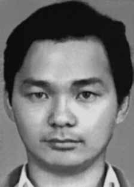

Luiz
Hirata
CIRCUNSTÂNCIAS DA MORTE
Luiz Hirata morreu em 20 de dezembro de 1971 em decorrência das torturas a que foi submetido no DOPS/SP. De acordo com a versão oficial, Luiz havia sido preso pela equipe do delegado Sérgio Paranhos Fleury no dia 26 de novembro de 1971. Após ser submetido a interrogatório, Luiz Hirata teria revelado a informação de que tinha um encontro marcado (“ponto”) com outros militantes. Conduzido ao local, Luiz teria colidido com a traseira de um ônibus quando tentava fugir a pé, em alta velocidade. Ainda, de acordo com essa narrativa, Luiz Hirata teria sido levado ao Hospital das Clínicas, onde morreria em virtude dos ferimentos provocados ao chocar-se com a traseira do ônibus. Passados mais de 40 anos, as investigações sobre esse episódio revelaram a existência de inúmeros elementos de convicção que permitem apontar que a versão oficial divulgada à época não se sustenta. De acordo com depoimento prestado por Heládio José Campos Leme, preso político que compartilhou cela com Luiz Hirata por duas semanas no final de 1971, Luiz morreu em consequência das brutais torturas a que foi submetido ao longo de três semanas. Nas suas palavras, Luiz ficou com o rosto “tão inchado que ele não podia abrir os olhos. Chegou um momento em que ele não mais urinava nem comia: foi quando o levaram, quase inconsciente”. O delegado Sérgio Fleury requisitou ao médico-legista Harry Shibata a elaboração de um laudo de exame que referendasse a versão formulada pela repressão: a de que Hirata teria morrido ao chocar-se com a traseira de um ônibus quando tentava fugir. O pedido ocorreu quatro dias antes do óbito do preso político e possibilita dimensionar qual o estado físico de Luiz para que a inverossímil versão pudesse ser cogitada. No documento redigido pelo médico, lê-se: […] atendendo ao pedido “reservado” da Delegacia Especializada de Ordem Social, subscrito pelo Dr. Sérgio F. P. Fleury […]. Segundo informação verbal, o examinado em questão, na tarde de hoje foi vítima de acidente quando tentava fuga, colidindo-se na traseira de um ônibus. Foi removido ao DOPS e por apresentar ferimentos generalizados, foi solicitada a presente perícia. […] O exame clínico do indivíduo em questão são indicativos [sic] de que houve traumatismo torácico, além de escoriações múltiplas mencionadas. A conduta faz-me parecer de bom alvitre a remoção imediata para o Hospital, onde deverá submeter-se a exame mais acurado, com radiografias complementares e as providências cabíveis. Apesar de o laudo com as recomendações do legista Harry Shibata ter sido elaborado às 9h15, Luiz Hirata só seria levado ao Hospital das Clínicas cerca de 11 horas depois. De acordo com a documentação disponível, Luiz teria morrido nesse hospital no dia 20 de dezembro de 1971. A requisição de exame apresentada ao Instituto Médico-Legal (IML), assinada por Jair Romeu, registra como causa da morte “morte natural” e diagnostica insuficiência renal crônica. No mesmo documento encontra-se grafada a letra “T”, uma referência a “terrorista” para os órgãos da repressão. Os médicos-legistas Onildo B. Rogano e Abeylard de Queiroz Orsini apontaram, em laudo emitido em 20 de dezembro de 1971, para a presença de “lesões não recentes”, embora tenham também referendado a versão divulgada oficialmente. Dois relatórios produzidos pelo Ministério da Marinha e da Aeronáutica, datados da década de 1990, referendaram a versão oficial, afirmando que Hirata “sofreu lesões traumáticas ao tentar fugir”. Em decisão de 14 de maio de 1996 a CEMDP reconheceu a responsabilidade do Estado brasileiro pela morte de Luiz Hirata. De acordo com o voto apresentado pelo relator, general Oswaldo Pereira Gomes, “as peças do processo dão a plena convicção de que Luiz Hirata estava preso na polícia paulista e que foi conduzido ao Hospital das Clínicas em estado terminal irreversível”. As circunstâncias da morte de Luiz Hirata, ainda de acordo com a CEMDP, permitem afirmar que era falsa a versão divulgada pelos órgãos oficiais à época. No âmbito das pesquisas realizadas pela Comissão Nacional da Verdade (CNV) foi encontrado na base de dados do Arquivo Nacional um documento produzido pelo Serviço Nacional de Informações (SNI) em 1975 que reafirma a versão oficial da morte de Luiz Hirata, conforme a qual ele teria falecido em consequência de acidente ocorrido em diligência policial. De acordo com certidão de óbito juntada ao processo da CEMDP referente ao caso, Luiz Hirata foi enterrado como indigente no cemitério Dom Bosco, em Perus. Seus restos mortais permanecem sem identificação.
Luiz Hirata died on December 20, 1971 as a result of the torture he was subjected to at DOPS/SP. According to the official version, Luiz had been arrested by the team of police chief Sérgio Paranhos Fleury on November 26, 1971. After being subjected to interrogation, Luiz Hirata would have revealed the information that he had an arranged meeting (“point”) with other militants. Driving to the location, Luiz collided with the back of a bus when he tried to escape on foot at high speed. Furthermore, according to this narrative, Luiz Hirata would have been taken to Hospital das Clínicas, where he would die from injuries caused when he collided with the back of the bus. More than 40 years later, investigations into this episode revealed the existence of numerous elements of conviction that allow us to point out that the official version published at the time is not sustainable. According to testimony given by Heládio José Campos Leme, a political prisoner who shared a cell with Luiz Hirata for two weeks at the end of 1971, Luiz died as a result of the brutal torture to which he was subjected over three weeks. In his words, Luiz's face was "so swollen that he couldn't open his eyes. There came a time when he no longer urinated or ate: that's when they took him, almost unconscious." Police chief Sérgio Fleury asked coroner Harry Shibata to prepare an examination report that endorsed the version formulated by the repression: that Hirata had died after colliding with the back of a bus while trying to escape. The request occurred four days before the death of the political prisoner and makes it possible to assess Luiz's physical state so that the unlikely version could be considered. The document written by the doctor reads: […] in response to the “reserved” request of the Specialized Social Order Police Station, signed by Dr. Sérgio F. P. Fleury […]. According to verbal information, the examinee in question was the victim of an accident this afternoon when he tried to escape, colliding with the back of a bus. He was removed to the DOPS and due to widespread injuries, this expert examination was requested. […] The clinical examination of the individual in question indicates that there was chest trauma, in addition to the multiple abrasions mentioned. This conduct makes it sound to me to be a good idea to immediately remove him to the hospital, where he will have to undergo a more accurate examination, with additional x-rays and the appropriate measures. Although the report with the recommendations of coroner Harry Shibata was prepared at 9:15 am, Luiz Hirata would only be taken to Hospital das Clínicas around 11 hours later. According to the available documentation, Luiz died in this hospital on December 20, 1971. The examination request presented to the Legal Medical Institute (IML), signed by Jair Romeu, records “natural death” as the cause of death and diagnoses chronic renal failure. The letter “T” is written in the same document, a reference to “terrorist” for the repression bodies. The coroners Onildo B. Rogano and Abeylard de Queiroz Orsini pointed out, in a report issued on December 20, 1971, the presence of “non-recent injuries”, although they also endorsed the officially released version. Two reports produced by the Ministry of the Navy and Air Force, dating from the 1990s, endorsed the official version, stating that Hirata “suffered traumatic injuries when trying to escape”. In a decision dated May 14, 1996, CEMDP recognized the responsibility of the Brazilian State for the death of Luiz Hirata. According to the vote presented by the rapporteur, General Oswaldo Pereira Gomes, “the documents in the process give the full conviction that Luiz Hirata was detained by the São Paulo police and that he was taken to Hospital das Clínicas in an irreversible terminal condition”. The circumstances of Luiz Hirata's death, according to CEMDP, allow us to state that the version released by official bodies at the time was false. As part of the research carried out by the National Truth Commission (CNV), a document produced by the National Information Service (SNI) in 1975 was found in the National Archives database that reaffirms the official version of Luiz Hirata's death, according to which he died as a result of an accident that occurred during a police investigation. According to the death certificate attached to the CEMDP file relating to the case, Luiz Hirata was buried as a pauper in the Dom Bosco cemetery, in Perus. His remains remain unidentified.
Luiz Hirata murió el 20 de diciembre de 1971 como consecuencia de las torturas a las que fue sometido en el DOPS/SP. Según la versión oficial, Luiz había sido detenido por el equipo del jefe de policía Sérgio Paranhos Fleury el 26 de noviembre de 1971. Después de ser interrogado, Luiz Hirata habría revelado la información de que tenía un encuentro concertado (“punto”) con otros militantes. Mientras se dirigía al lugar, Luiz chocó con la parte trasera de un autobús cuando intentaba escapar a pie a gran velocidad. Además, según esa narración, Luiz Hirata habría sido trasladado al Hospital das Clínicas, donde moriría a causa de las heridas provocadas al chocar con la parte trasera del autobús. Más de 40 años después, las investigaciones sobre este episodio revelaron la existencia de numerosos elementos de convicción que permiten señalar que la versión oficial publicada en su momento no es sostenible. Según el testimonio de Heládio José Campos Leme, preso político que compartió celda con Luiz Hirata durante dos semanas a finales de 1971, Luiz murió como consecuencia de las brutales torturas a las que fue sometido durante tres semanas. Según sus palabras, el rostro de Luiz estaba "tan hinchado que no podía abrir los ojos. Llegó un momento en que ya no orinaba ni comía: fue entonces cuando se lo llevaron, casi inconsciente". El jefe de policía, Sérgio Fleury, pidió al forense Harry Shibata que preparara un informe de examen que respaldara la versión formulada por la represión: que Hirata había muerto tras chocar con la parte trasera de un autobús mientras intentaba escapar. El pedido se produjo cuatro días antes de la muerte del preso político y permite evaluar el estado físico de Luiz para considerar la improbable versión. El documento redactado por el médico dice: […] en respuesta a la solicitud “reservada” de la Comisaría Especializada de Orden Social, firmada por el Dr. Sérgio F. P. Fleury […]. Según información verbal, el examinado en cuestión fue víctima de un accidente esta tarde cuando intentaba escapar, chocando con la parte trasera de un autobús. Fue trasladado al DOPS y debido a las lesiones generalizadas se solicitó este peritaje. […] El examen clínico del individuo en cuestión indica que presentó traumatismo torácico, además de las múltiples abrasiones mencionadas. Esta conducta me hace parecer una buena idea trasladarlo inmediatamente al hospital, donde tendrá que someterse a un examen más preciso, con radiografías adicionales y las medidas adecuadas. Aunque el informe con las recomendaciones del médico forense Harry Shibata fue elaborado a las 9:15 horas, Luiz Hirata sería trasladado al Hospital das Clínicas recién alrededor de 11 horas después. Según la documentación disponible, Luiz falleció en ese hospital el 20 de diciembre de 1971. La solicitud de examen presentada al Instituto Médico Legal (IML), firmada por Jair Romeu, registra como causa de muerte la “muerte natural” y diagnostica insuficiencia renal crónica. En el mismo documento está escrita la letra “T”, una referencia a “terrorista” para los órganos de represión. Los forenses Onildo B. Rogano y Abeylard de Queiroz Orsini señalaron, en informe emitido el 20 de diciembre de 1971, la presencia de “lesiones no recientes”, aunque también refrendaron la versión difundida oficialmente. Dos informes elaborados por el Ministerio de Marina y Fuerza Aérea, que datan de los años 1990, respaldaron la versión oficial, afirmando que Hirata “sufrió lesiones traumáticas al intentar escapar”. En decisión del 14 de mayo de 1996, el CEMDP reconoció la responsabilidad del Estado brasileño por la muerte de Luiz Hirata. Según la votación presentada por el relator, general Oswaldo Pereira Gomes, “los documentos del proceso dan plena convicción de que Luiz Hirata fue detenido por la policía de São Paulo y que fue trasladado al Hospital das Clínicas en estado terminal irreversible”. Las circunstancias de la muerte de Luiz Hirata, según el CEMDP, permiten afirmar que la versión difundida por los organismos oficiales en ese momento era falsa. Como parte de la investigación realizada por la Comisión Nacional de la Verdad (CNV), se encontró en la base de datos del Archivo Nacional un documento elaborado por el Servicio Nacional de Información (SNI) en 1975 que reafirma la versión oficial sobre la muerte de Luiz Hirata, según la cual murió como consecuencia de un accidente ocurrido durante una investigación policial. Según el certificado de defunción adjunto al expediente del CEMDP relacionado con el caso, Luiz Hirata fue enterrado como indigente en el cementerio Dom Bosco, en Perus. Sus restos permanecen sin identificar.